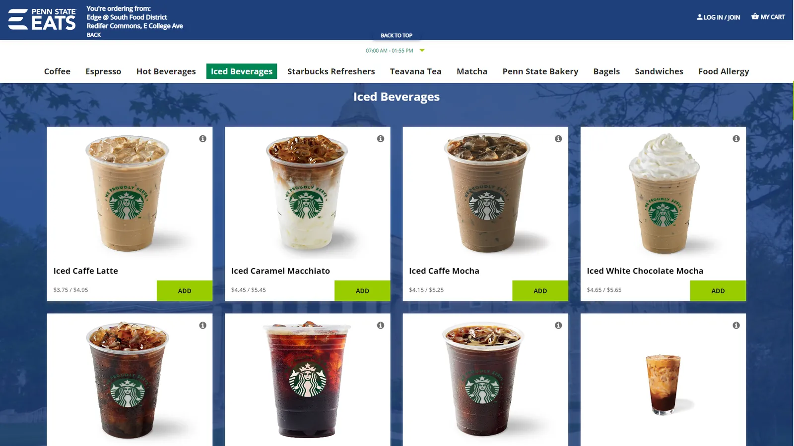
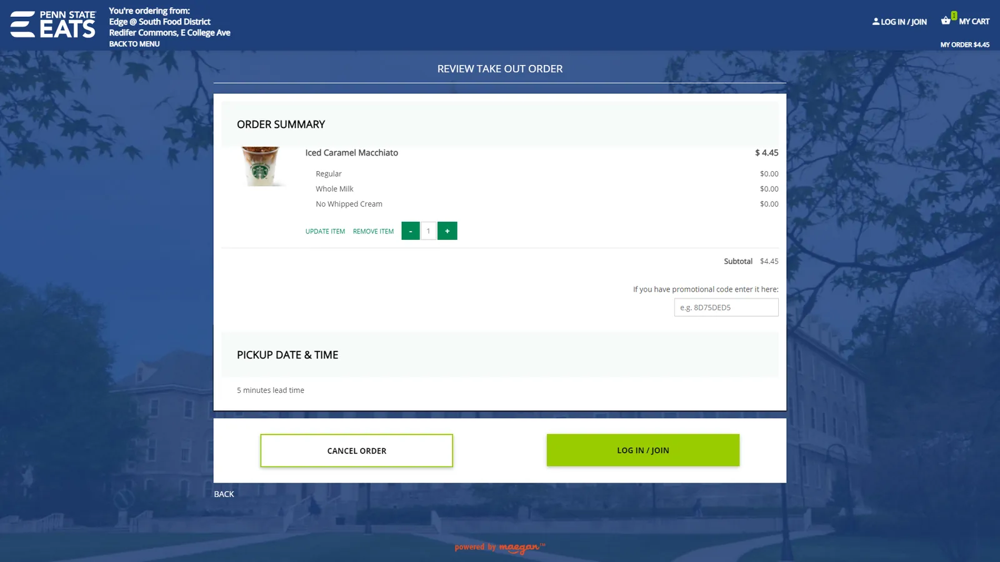

Penn State University asked our design team to solve a business problem. As the student population grew, so did the food lines. Wait times got too long and foot traffic slowed to a crawl, creating a poor experience for everyone.
We ran field research over 1 week: surveys, short questionnaires and fly-on-the-wall observation. After synthesizing the data and identifying pain points, we began creating solutions.
Our team created two solutions. First, optimize the current experience and refine the UI on the food kiosks. Second, create a mobile ordering experience to eliminate the lines altogether. With 20+ members, we split into research and design teams, with several people in both.
After about 3 weeks of iterations and discussions with our sponsor, we arrived at a design we were satisfied with and handed it off to the university engineers to build. Visit the live Penn State Eats site.

